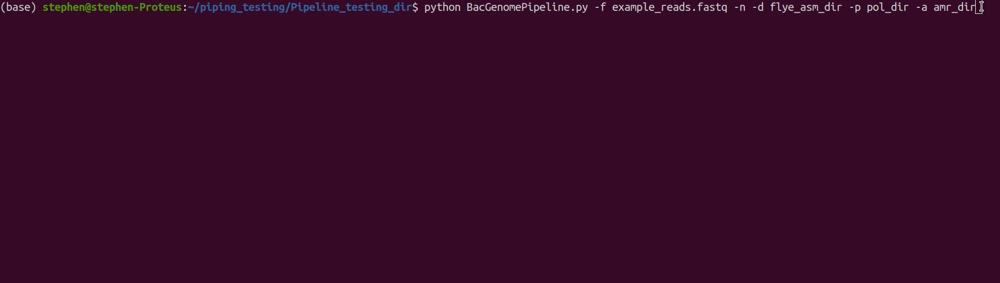

Program developed by Stephen Fordham
Complete bacterial genome assembly pipeline. Assembled and annotated bacterial genomes can be created with only raw reads as input! BacGenomePipeline can accept either fastq or gzipped fastq files. Relax and grab a coffee while BacGenomePipeline does the genomic heavy lifting.
This pipeline filters raw reads to produce the best 500mb reads. The filtering process also places weight on read quality, to ensure small high quality reads are not discarded. This is considered vital to aid the recovery of small plasmids present within bacterial strains.
Optionally, the user can run Nanostat to assess read quality metrics. The best reads are then assembled using the flye genome assembler with settings adjusted to help recovery of plasmids with an imbalanced distribution. The assembly is then polished with one round of medaka-consensus polishing. The polished assembly is annotated using staramr which scans scans bacterial genome contigs against the ResFinder, PointFinder, and PlasmidFinder databases (used by the ResFinder webservice and other webservices offered by the Center for Genomic Epidemiology) and compiles a summary report of detected antimicrobial resistance genes.
usage: BacGenomePipeline.py [-h] -f [-n] -d -p -a
Complete Bacterial Genome Assembly and Annotation Pipeline
optional arguments:
-h, --help show this help message and exit
-f , --fastq_file Specify an input Fastq file for the Pipeline
-n, --nanostats Optionally run a NanoStats report on your filtered read set
-d , --flye_dir Specify a Flye Genome assembly directory name
-p , --polished_dir Specify a Medaka Polished genome directory name
-a , --amr_dir Specify a Antimicrobial resistance directory name
python BacGenomePipeline.py -f reads.fastq -n -d flye_amr_dir -p pol_dir -a bac_amr_dir
python BacGenomePipeline.py --fastq_file reads.fastq --nanostats --flye_dir flye_asm_dir --polished_dir complete_pol_dir --amr_dir bac_amr_dir
I recommend running BacGenomePipeline from your virtual environment.
To run BacGenomePipeline anywhere, make sure to run the following commands on your terminal:
chmod +x BacGenomePipeline.py
Move executable to your selected bin directory
To find bin path on Linux, simply run:
echo $PATH
Then copy script to bin path, for example:
cp BacGenomePipeline.py /home/stephen/.local/bin/BacGenomePipeline
Now simply run the script as follows:
BacGenomePipeline -f reads.fastq -n -d flye_amr_dir -p pol_dir -a bac_amr_dir
Alternatively, run BacGenomePipeline as shown below. Here, the fastq file must be
in the same working directory as the script calling it.

Assembly of extensively-drug resistant (XDR) strain Klebsiella pneumoniae ATCC700721
assembly.gfa file in flye directory rendered via Bandage
1 completely closed Chromosome
5 completely closed plasmids
Figure 1
Sample AMR data available via amr_dir
Figure 2
To run BacGenomePipeline make sure you install the following programs.
1. medaka
2. NanoStat
3. staramr
4. filtlong
5. flye
6. numpy
filtlong and flye require conda to install. To install conda on linux, follow the instructions listed here
On your linux terminal run in the following order:
pip install medaka==1.2.1
pip install NanoStat==1.5.0
pip install staramr==0.7.2
conda install -c bioconda filtlong==0.2.0
conda install -c bioconda flye==2.8.1
pip install numpy==1.19.5
if promoted to install new packages after conda installation, e.g.
added / updated specs:
- flye==2.8.1
update other packages ...
enter N
for medaka to run, it is necessary to downgrade to numpy 1.19